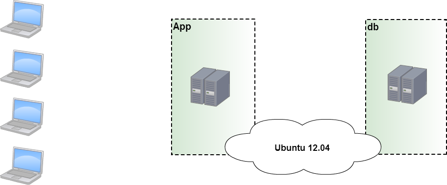
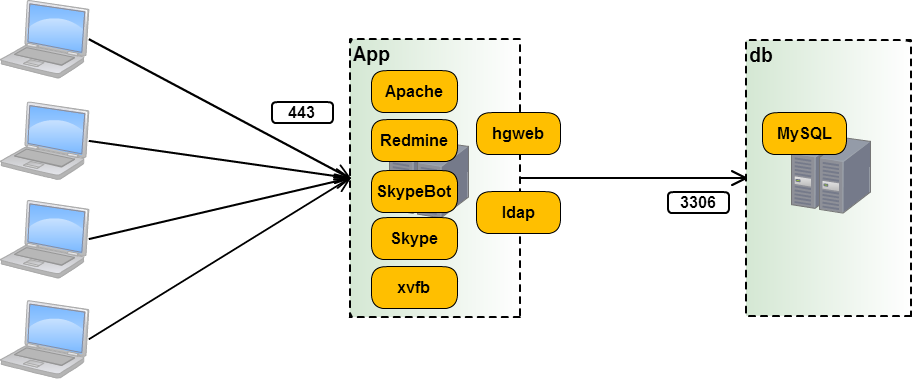
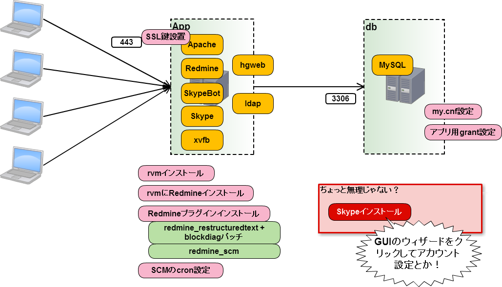
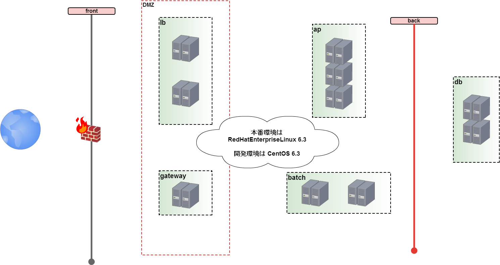
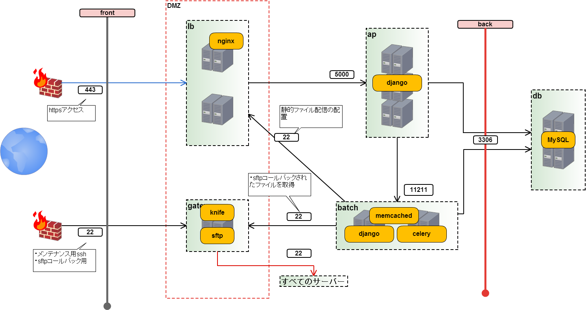
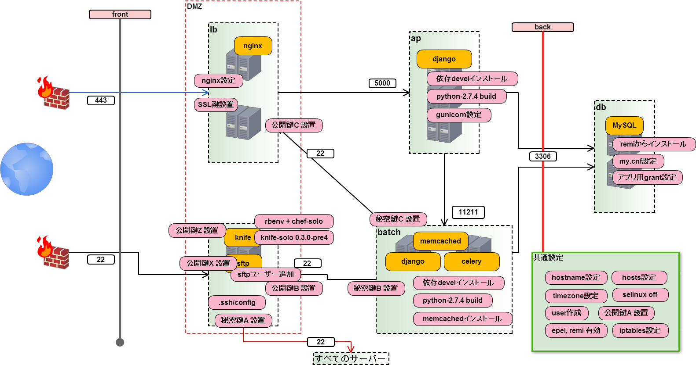
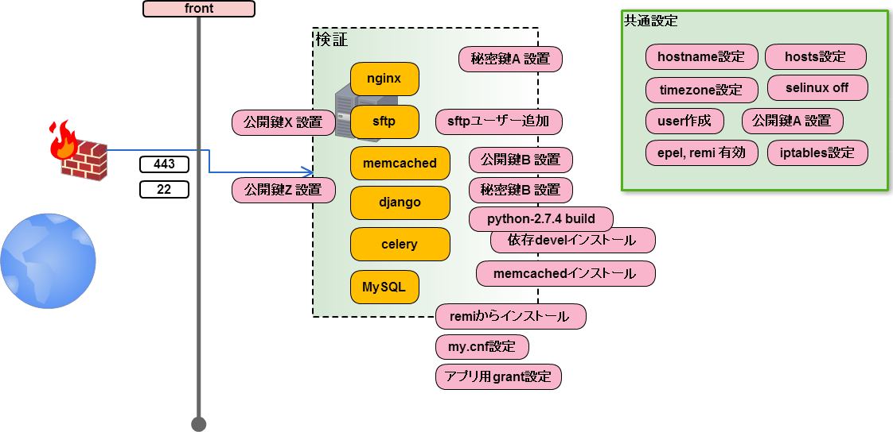
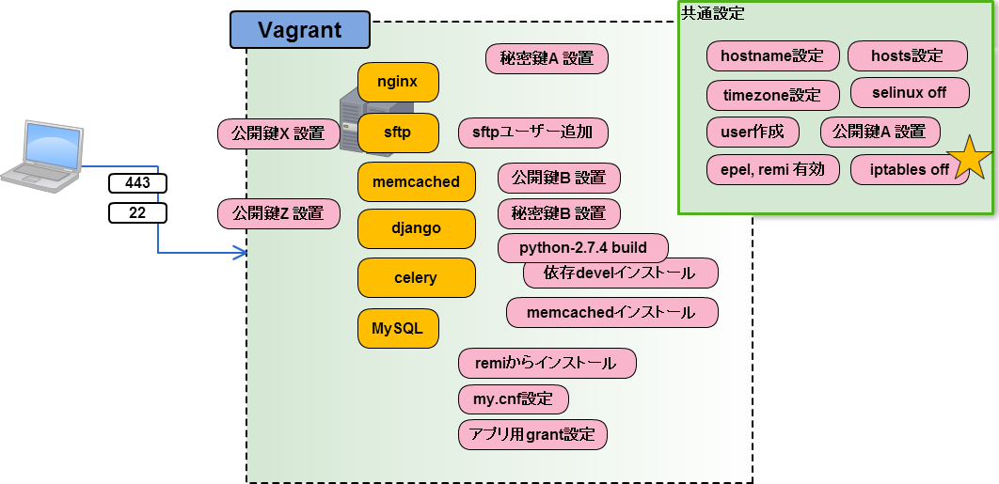

Chefで構築するBP-Redmine環境¶
提供¶

今日のお題¶
- 事例1:
- BeProudのRedmine環境を作る
- 事例2:
- 10台構成のWebサービス環境を作る
事例1: BeProudのRedmine環境を作る¶
例1: 会社のRedmineの管理が大変¶
- Pythonの会社なのでメンテナンスが大変
- Redmineにプラグイン入れてそのままリポジトリ管理
- 構築手順とか残っているような無いような・・
- よしchefを使おう（特に社内の合意は取らずに開始
例1: サーバー構成¶

例1: Redmineはアプリ？ミドルウエア？¶
- ミドルウエアです
- ミドルウエアなのでCapistranoは使いません
- ということでChefで突き進みます
例1: 提供するサービスとポート¶

例1: セットアップ内容¶

例1: 使用したcookbook¶
- opscode
- ap, git, mercurial, mysql, unicorn, chef-rvm
- 自作
- chef-rvm-redmine, chef-bp-redmine, chef-download-make-install
例1: bp-redmine は何するの？¶
- themeのcssやproduction.rbの設置
- redmine_scm プラグインインストール
- redmine_restructured_text_plugin インストール
- SCMリポジトリfetchのためのcron設定(lockrunのwget,gcc)
例1: 使用したツール¶
- vagrant
- librarian-chef
- chefはvagrantのboxイメージに同梱されてた
悩み＆あきらめ¶
悩み1¶
- 最初に使い始める人に簡単に使う方法を提供したい
- VirtualBox + Vagrant + (Berkshelf | Librarian)
- Rubyに明るくないのでgem周りでけっこうはまる
悩み2¶
- RedmineのバージョンアップをChefでどうやって表現するの？
- chefで環境つくればいいから、新しい環境作って切り換えかなあ
悩み3¶
- どのchefを使うか
- 最初はVagrantでいいんじゃない？
- 参考: 開発サーバに chef を入れるときの 11の方法 - Hack like a rolling stone
あきらめ¶
- Skypeクライアントのインストール
- xvfbにvncで接続してインストールウィザードをクリックする
事例2: 10台構成のWebサービス環境を作る¶
例2: お仕事のサーバー構築¶
- サーバーは10台構成
- iptablesによるアクセス制限設定
- サーバー間でプログラムでssh接続
- sftp専用ユーザーの存在
- DBは安全地帯に居るのでインターネット接続出来ない
例2: サーバー構成¶

例2: 提供するサービスとポート¶

例2: セットアップ内容¶

例2: 検証環境¶

例2: 個人開発環境¶

例2: 役割をroleでグルーピング¶
- 抽象的なロール
- common
- 機能のロール
- django-python, nginx, loadbalancer, memcached, db, ci, knife
- 大きいロール(≒ノード)
- banana-gateway, banana-batch, personal-dev
例2: 環境別設定をenvironmentで¶
- bpvm: 社内の10台構成環境
- personal: 個人のvagrant用環境
- verification: 検証サーバー
- honban: 10台の本番環境
しかし chef 11.4.0 のchef-soloはenvironmentをサポートしていなかった！！
例2: 使用したcookbook¶
- opscode
- yum, git, openssl, mysql, nginx, sudo, screen, selinux, openssh, memcached, jenkins
- github
- timezone, user, hostname, chef-rbenv, chef-ruby_build
例2: 自作したcookbook¶
python-build
- 案件依存もの
- hosts設定, .ssh/config設定, iptables設定, nginx設定, gunicorn設定, sftpユーザー作成, MySQL grant設定, ssh鍵設置, SSL鍵設置, knife-solo 0.3.0-pre4 インストール
例2: 使用したツール¶
- vagrant
- librarian-chef
- chef-solo + knife-solo
- knife-solo_data_bag
今回はVagrantを個人用、soloをサーバー用として使えるようにした。
悩み＆はまり¶
悩み4¶
- ssh鍵やssl鍵をSCMにそのまま保存するの？
- 生の秘密鍵を持って歩くのはいやだ！
- data bag を使えば 暗号化 出来るらしいぞ！
- knife data bag create したらchef-serverと通信した...
悩み4¶
- 解決: knife-solo_data_bag を使う
- knife solo data bag create コマンドが使える
- これでサーバー鍵等を保存しておける！！
- マスターキーは必要..
- マスターキーだけ生でSCMに保存しました...
例2: はまったこと¶
- sshログインをPW禁止したら...
- sshログインをroot禁止したら...
- iptables設定有効化後に許可設定する順番で...
knife-soloかchef-serverか¶
- environmentはchef-soloでは未実装
- data-bagはchef-soloでは作れない
- chef-serverを本番環境内に維持したくない
- chef-serverの運用が未経験未知数
knife-soloかchef-serverか¶
- environmentはchef-soloでは未実装
- roleを分けて逃げた
- data-bagはchef-soloでは作れない
- knife-solo_data_bagで出来た！
knife-soloかchef-serverか¶
結論: 今回はchef-soloで。でもchef-serverも良いかも。